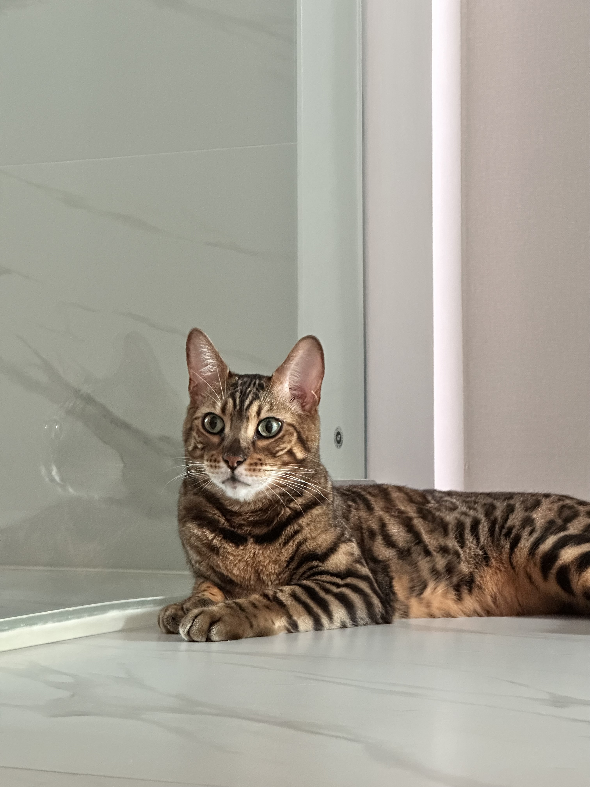

About

Purpose
집에서 키우는 고양이가 놀다가 실수로 모니터를 넘어뜨려 디스플레이에 금이 가는 일이 발생했습니다. 그로 인해 모니터를 새로 구입해야 하는 상황이 되었고, 이것이 새로운 모니터를 찾게 된 계기가 되었습니다. 하지만 막상 모니터를 구매하려고 검색해보니, 정보보다는 광고성 글이 대부분이어서 제대로 된 정보를 얻기가 어려웠습니다. 이때, 내가 직접 모니터의 디스플레이에 대해 더 잘 알아야 좋은 제품을 선택할 수 있겠다는 생각을 하게 되었습니다. 그래서 모니터 관련 정보를 정리해 사람들에게 유용하게 전달할 수 있는 웹사이트를 만들기로 결심했습니다. 이 사이트가 바로 그렇게 시작된 프로젝트입니다.
이 귀여운 친구가 바로 모니터를 망가뜨린 장본인입니다. 사고를 자주 치지만, 그만큼 사랑스러운 녀석이에요.
Thoughts
웹사이트를 만들게 된 배경은 위와 같습니다. 처음에는 웹사이트 구현 과정이 꽤 직관적이고 이미 여러 수업을 통해 해보았던 과정이라 어려운 부분은 없었지만, 가장 큰 어려움은 바로 디자인이었습니다. 어떻게 하면 텍스트 위주의 투박한 웹사이트를 예술적으로 꾸밀 수 있을지 고민했습니다. 그때, 다른 사람들이 만든 멋진 디자인의 웹사이트와 CSS 파일을 참고할 수 있다는 것을 알게 되었고, 이를 통해 훨씬 더 감각적인 웹사이트를 만들 수 있다는 자신감을 얻었습니다. 코드를 조금 수정하고 제 스타일에 맞게 변형하는 과정을 거치면서, 제가 원하는 형태의 사이트를 구현할 수 있었습니다. 다음에 또 웹사이트를 만들 기회가 생긴다면, 이번 경험을 바탕으로 제가 직접 CSS 파일을 작성해 나만의 스타일로 웹사이트를 꾸미고 싶습니다.